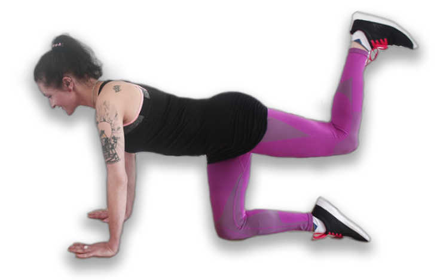
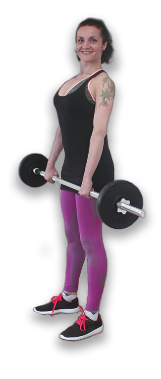
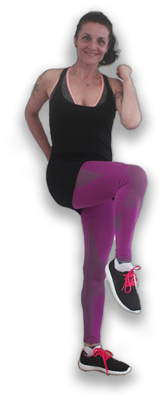
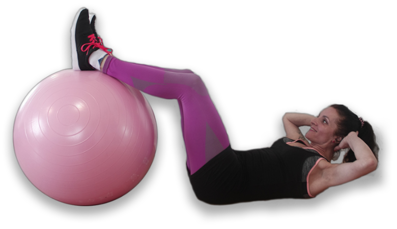
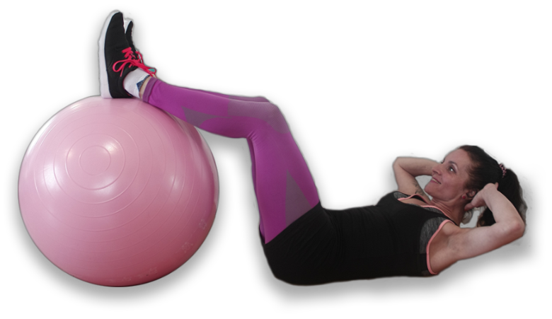
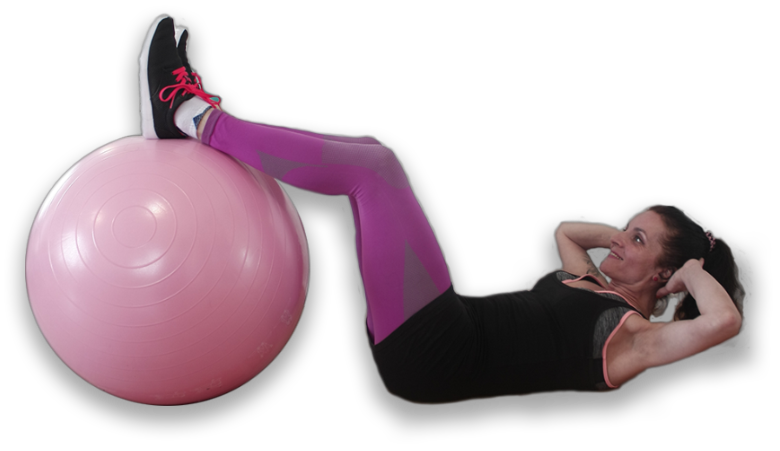
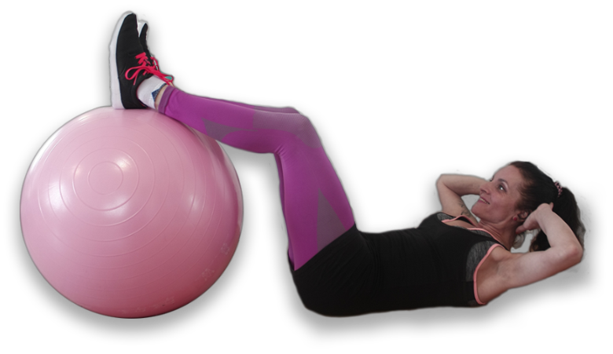

Функциональные тренировки для женщин


 



Специальный вид фитнеса в котором чередуются интенсивные физические упражнения и фазы восстановления сил. Такое чередование используется для усиления эффективности, поскольку такой подход дает возможность заниматься более интенсивно до наступления усталости. Помимо этого, во время таких тренировок сжигается больше калорий, а это приводит к уменьшению веса.
Комплекс физических упражнений, направленных на лечение, реабилитацию и профилактику заболеваний опорно-двигательного аппарата. ЛФК помогает укрепить мышечный корсет спины, увеличить подвижность суставов, снизить нагрузку на позвоночник, а также комплексно оздоровить организм.
Высокоинтенсивный метод тренинга. За одну тренировку прорабатываются все основные мышечные группы тела. Кроме упражнений с собственным весом могут использоватся гантели, амортизационные ленты или фитбол. Общая продолжительность тренинга 30-60 минут. Методика пригодна как для начинающих , так и для более опытных спортсменов.
Избавит вас от лишнего веса, сделает мышцы более сильными (особенно это касается мышц нижней части тела — ягодиц и ног, брюшного пресса), улучшит осанку и координацию движений, нормализует работу сердечно-сосудистой системы и повысит настроение.